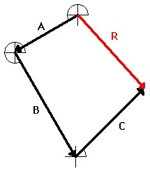
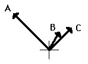
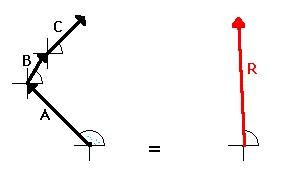

The resultant is the vector sum of two or more vectors. It is the result of adding two or more vectors together. If displacement vectors A, B, and C are added together, the result will be vector R. As shown in the diagram, vector R can be determined by the use of an accurately drawn, scaled, vector addition diagram.
To say that vector R is the resultant displacement of displacement vectors A, B, and C is to say that a person who walked with displacements A, then B, and then C would be displaced by the same amount as a person who walked with displacement R. Displacement vector R gives the same result as displacement vectors A + B + C. That is why it can be said that A + B + C = R The above discussion pertains to the result of adding displacement vectors.When displacement vectors are added, the result is a resultant displacement. But any two vectors can be added as long as they are the same vector quantity. If two or more velocity vectors are added, then the result is a resultant velocity. If two or more force vectors are added, then the result is a resultant force. In all such cases, the resultant vector (whether a displacement vector, force vector, velocity vector, etc.) is the result of adding the individual vectors. It is the same thing as adding A + B + C + ... . "To do A + B + C is the same as to do R."  As an example, consider a football player who gets hit simultaneously by three players on the opposing team (players A, B, and C). The football player experiences three different applied forces. Each applied force contributes to a total or resulting force. If the three forces are added together using methods of vector addition (discussed earlier), then the resultant vector R can be determined. In this case, to experience the three forces A, B and C is the same as experiencing force R. To be hit by players A, B, and C would result in the same force as being hit by one player applying force R. "To do A + B + C is the same as to do R." Vector R is the same result as vectors A + B + C!!  In summary, the resultant is the vector sum of all the individual vectors. The resultant is the result of combining the individual vectors together. The resultant can be determined by adding the individual forces together using vector addition methods.